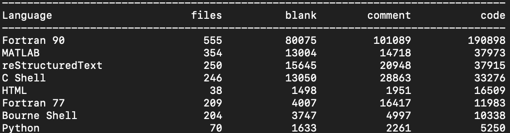

Welcome to the DART developers handbook
Goal of this document
A living document to describe the DART software workflow. Our current workflow is using Github.
Things we don't have yet:
- a project management system
- a release schedule
Things we do have:
- standups
- issue tracking via Github
- code review via pull requests on Github
- this many lines of code:
